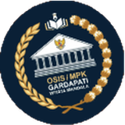

Mahasiswa Informatika yang merancang antarmuka, web, dan desain grafis.
Memadukan logika pemrograman, kepekaan visual, dan riset kecerdasan artifisial untuk membuat solusi digital yang fungsional dan nyaman digunakan.
Bengkulu, IndonesiaTerbuka untuk kolaborasi
Meow!
ThinkPurr-fect
2Penghargaan internasional
10Penghargaan nasional
15Proyek unggulan
Proyek
Tentang saya
Saya Mario Andiko Dwi Saputra, mahasiswa Informatika Universitas Bengkulu yang berfokus pada UI/UX design, web development, dan pengembangan perangkat lunak. Saya terbiasa merancang antarmuka aplikasi mobile di Figma dan membangun produk digital yang fungsional dan nyaman digunakan.
Dasar pemrograman saya (Python, JavaScript, HTML, CSS) berpadu dengan kemampuan desain visual yang terbukti lewat lebih dari 15 penghargaan desain poster tingkat kota hingga nasional. Saya juga menyusun karya inovasi berbasis kecerdasan artifisial dan machine learning yang meraih juara tingkat nasional hingga internasional, serta mengelola publikasi dan konten digital di ERCOM dan MOSTANEER.
Saya aktif di bidang Pendidikan, Riset, Inovasi, dan Teknologi (PENRISTEK) HIMATIF, terbiasa berpikir kritis dan bekerja dalam tim, dan selalu terbuka untuk kolaborasi proyek maupun penawaran profesional. Hubungi saya lewat email di dikodikod94@gmail.com.
Sosial media
Pengalaman kerja
2022 sampai sekarang · Bengkulu
Desainer Grafis (Freelance)
Poster, banner, dan konten media sosial
Merancang poster, banner, dan feed media sosial untuk kegiatan organisasi, kampus, dan kompetisi dengan Canva, Figma, Photoshop, dan Illustrator.
Karya poster meraih lebih dari 15 penghargaan dari tingkat kota, provinsi, hingga nasional, antara lain Juara 1 COS 2025 dan Juara 1 FLS2N Kota 2024.
2022 sampai sekarang · Bengkulu
Konten Kreator dan Dokumentasi
Publikasi, dokumentasi, dan konten digital
Memimpin tim Publikasi dan Dokumentasi OSIS SMAN 1 Kota Bengkulu, lalu menjadi kreator konten visual dan dokumentasi untuk ERCOM, MOSTANEER, dan CODEWORKS Informatika di Universitas Bengkulu.
Memproduksi dan menyunting foto serta video dengan CapCut, Premiere Pro, KineMaster, dan PixelLab.
Menjalankan kampanye sosial dan literasi lewat konten kreatif bersama Duta Kreator Provinsi Bengkulu (Finalis 2025).
Karya ilmiah dan inovasi
Juara 2
Kompetisi Nasional Inovasi Digital Mahasiswa, Universitas Negeri Makassar · 29 Juli sampai 16 Agustus 2026
Divisi Inovasi Teknologi Digital Pendidikan (ITDP), Dies Natalis UNM ke-65
"Melampaui Angka, Mengungkap Potensi: Transformasi Asesmen Pendidikan Indonesia melalui Sistem Diagnostik Literasi Berbasis Artificial Intelligence"
Bronze Medal
10th FAPERTA FAIR, Chiang Mai University, Thailand · 8–9 Agustus 2026
Bronze Medal dan Best Poster
Karya esai "VOCARE: A Voice-Based Digital Twin for Screening Prodromal Parkinson's Disease"
Lolos seleksi
ALURA, GEMASTIK Divisi Smart City 2026 · seleksi internal
Peringatan dini pendangkalan alur pelayaran
Sistem Batimetri Partisipatif Berbasis Crowdsensing Armada Nelayan dan Kecerdasan Artifisial untuk Peringatan Dini Pendangkalan Alur Pelayaran Pelabuhan Pulau Baai.
Anggota tim
PKM-KC Internal, Universitas Bengkulu · Juli 2026
Skrining risiko anemia kehamilan
Sistem Skrining Risiko Anemia Kehamilan Non-Invasif melalui Palpebral Conjunctiva Berbasis Smartphone dan Machine Learning Terintegrasi Opto-Mechanic Light-Shield.
Anggota
Pekan Ilmiah Mahasiswa (PIM) UNIB, Universitas Bengkulu · Desember 2025
Pekan Ilmiah Mahasiswa
Alat dan keahlian
Figma
Photoshop
Illustrator
Premiere Pro
CapCut
Canva
ibisPaint X
PixelLab
Pemrograman
PythonJavaScriptHTMLCSS
Perangkat lain
Microsoft WordMicrosoft ExcelKineMaster
Soft skills
Pemecahan masalahAdaptifManajemen waktuKomunikasi efektifBerbicara di depan umum
Bahasa
Indonesia (native)English (intermediate)
Pendidikan
InformatikaUniversitas BengkuluAgustus 2025 sampai sekarang
Matematika dan Ilmu Pengetahuan AlamSMAN 1 Kota BengkuluJuli 2022 sampai April 2025 · nilai 88,15 dari 100
Organisasi
Kampus dan komunitas
Staff PENRISTEKHIMATIF, Universitas Bengkulu2026
Anggota KOMINFOERCOM, Universitas BengkuluAgustus 2025 sampai sekarang
Anggota Divisi KaderisasiMOSTANEER, Universitas BengkuluAgustus 2025 sampai sekarang
Anggota Divisi SosialDuta Kreator Provinsi BengkuluFebruari 2025 sampai sekarang
SekretarisSanggar Seni Lemang Batu (SALEMBA), Kota Bengkulu
Sekolah

Ketua Divisi PUBDOKOSIS SMAN 1 Kota BengkuluOktober 2022 sampai Oktober 2024
Anggota PSDMRohani Islam (Rohis) SMAN 1 Kota BengkuluSeptember 2022 sampai September 2024
Anggota RobotikROBOTICAL, ekstrakurikuler Fisika SMAN 1 Kota BengkuluSeptember 2022 sampai September 2024
Anggota MediaALAP (Aktif Literasi Alam dan Penghijauan) SMAN 1 Kota BengkuluSeptember 2023 sampai September 2024
Kepanitiaan dan kegiatan, 2025 sampai 2026
HIMATIF: Anggota PERKAP pada CHROME dan Gathering 2026; Anggota DANUS pada IT RUSH 2026.
MOSTANEER: Ketua Pelaksana IGNITE 2026; Koordinator Media MOSTANEER FAIR 16 (Milad ke-22, 2026); Publikasi dan Dokumentasi MUKER (Desember 2025) dan PMB (2026).
ERCOM: Anggota PDD NEON National ERCOM Competition 2026; Staff KOMINFO pada ERCOM Academy (April 2026) dan ERCOM Go To School di SMK 3 Kota Bengkulu (2026).
Lainnya: Divisi Acara Summer Bootcamp (Mei 2026); Publikasi dan Dokumentasi CODEWORKS Informatika (2026).
Prestasi per tingkat
Internasional 2
Best Poster
10th FAPERTA FAIRChiang Mai University, Thailand · Agustus 2026
Bronze Medal
10th FAPERTA FAIR, karya esai VOCAREChiang Mai University, Thailand · 8–9 Agustus 2026
Nasional 10
Juara 2
Divisi Inovasi Teknologi Digital Pendidikan (ITDP)Kompetisi Nasional Inovasi Digital Mahasiswa, Universitas Negeri Makassar · 2026
Terfavorit
Lomba Video Edukasi EkonomiHIMEP FEB UNIB · 2026
Juara 1
Lomba Poster COS2025
Juara 2
Lomba Poster AGATIS2025
Juara 3
Lomba Poster MOSTANEER FAIR2025
Juara 3
Lomba Poster IPA FAIR2025
Juara 2
Lomba Poster BIOEXPOHimpunan Mahasiswa Biologi ABAKA, Universitas Bengkulu · 12 Oktober 2024
Juara 2
Lomba Poster Nasional GeophysicsUniversitas Bengkulu · 26 Oktober 2024
Juara 3
Lomba Poster GEMA IMCIntellectual Moslem Community, Universitas Bengkulu · 2023
Terbaik
Peserta Terbaik Lomba Menulis Jawara Sastra2023
Provinsi 7
Juara 2
Desain Poster HIV AIDS2025
Finalis
Duta Kreator Provinsi Bengkulu2025
Peserta
Cipta Buku Cerita Pendek Daerah Bengkulu2025
Juara 2
FLS2N Cabang Poster Tingkat ProvinsiDinas Pendidikan dan Kebudayaan Provinsi Bengkulu · 2024
Juara 1
Lomba Poster Digital MICA Fiesta Part 22024
Juara 2
Lomba Pembuatan Konten Digital Berbahasa DaerahKantor Bahasa Provinsi Bengkulu · 2024
Juara 3
Desain Poster HIV AIDS2023
Kota/Kabupaten 10
Juara 1
Desain Poster Iktirof2025
Juara 1
Lomba Poster Digital "Colorfull Ramadhan"Masjid Nurul Ilmi, MAN 1 Kota Bengkulu · 15 Maret 2025
Juara 1
FLS2N Cabang Poster Tingkat Kota2024
Juara 1
Lomba Poster HUT SMAN 11 Kota BengkuluAntar siswa SMA, diselenggarakan SMAN 11 Kota Bengkulu · 2024
Harapan 2
Seni Daur Ulang (Pemanfaatan Limbah Plastik)2024
Harapan 2
Presentasi Cinta, Bangga, Paham Rupiah (CBPR)Bank Indonesia · 2024
Juara 3
FLS2N Cabang Poster Tingkat Kota2023
Juara 2
Lomba Poster HUT SMAN 11 Kota BengkuluAntar siswa SMA, diselenggarakan SMAN 11 Kota Bengkulu · 14 Desember 2023
Juara 3
Futsal Iktirof2023
Juara 3
Miniatur TabotTaman Budaya, tingkat kota · 2023
Sekolah 1
Hafalan
Tahfidz Juz 302022
Kampus 2
Juara 2
Lomba Esai ERCOM AcademyLingkup Fakultas Teknik, Universitas Bengkulu · 2026
Juara 3
MAPRES Tingkat Fakultas TeknikUniversitas Bengkulu · 2025
Lainnya 1
Juara 1
Lomba Poster MOSTANEER FAIR2022
Galeri sertifikat
Pelatihan dan seminar
International Seminar of the National ERCOM Competition (NEON) 2026Tema "Green Technology Innovation: Transforming Green Infrastructure Towards a Smart and Sustainable City", UKM ERCOM FT Universitas Bengkulu
Pelatihan Kesekretariatan dan Kebendaharaan ERCOMStaff KOMINFO dan peserta, UKM ERCOM Universitas Bengkulu
Webinar dan Bedah BukuUniversitas Bengkulu
IT Mastery: Shift Left SecurityIntegrasi cyber security dalam siklus pengembangan perangkat lunak (SDLC), Universitas Bengkulu
Hour of Coding TrainingDasar pemrograman dan logika komputasi, Universitas Bengkulu
Seminar Nasional WIMNUSWirausaha Muda Nusantara, tema "Youth Today Leader Tomorrow"
Pelatihan Sejarah Lokal dan Pelestarian Cagar BudayaMuseum Bengkulu
Pembekalan Krida Duta Bahasa, Aktivis Penggerak LiterasiKantor Bahasa Provinsi Bengkulu, di SMAN 1 Kota Bengkulu